La quantificazione dello iodio nel parenchima cerebrale dopo stroke ischemico mediante Dual Energy CT
Dr.ssa Ilaria Testa
10 novembre 2020
Scuola di Specializzazione in Radiodiagnostica
Università di Verona
Anno Accademico 2018/2019
Introduzione
Imaging dello stroke ischemico
TC Nativa
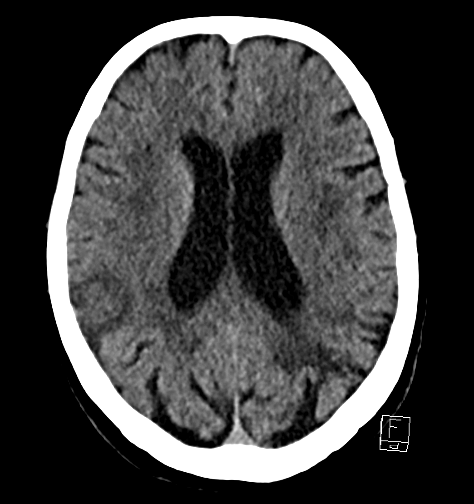
riconoscimento segni di ischemia
esclusione emorragie
Angio-TC multifasica
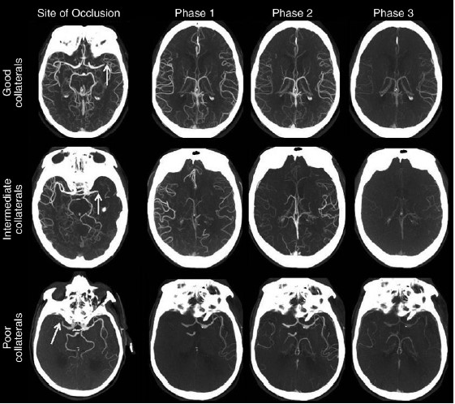
identificazione occlusione arteriosa
valutazione circoli collaterali
Obiettivi
Obiettivi
Valutare l’applicazione della DECT nella diagnosi precoce di stroke ischemico
Sfruttare la capacità della DECT di quantificare il contenuto di iodio in un volume di tessuto
Valutare se l’analisi quantitativa del contenuto di iodio nel parenchima cerebrale possa essere predittiva di un’ischemia
Dual Energy CT
Dual Energy CT
Dual Source CT
Acquisizione delle immagini a due diversi Kilovoltaggi (80 kVp e 140 kVp)
Elaborazione delle immagini mediante post processing
Caratterizzazione tissutale
Dose paragonabile alla Single Energy
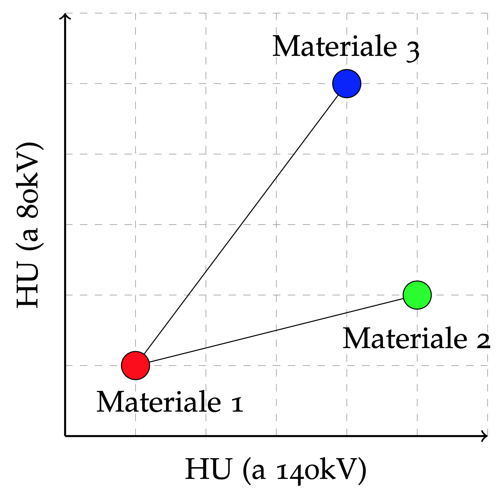
Materiali e Metodi
Selezione dei pazienti
65 pazienti
sospetto stroke del circolo anteriore
Gruppo 1: (18 p)
riscontro di occlusione arteriosa all’angio-TC
Gruppo 2: (12 p)
angio-TC negativa e riscontro di lesioni ischemiche al controllo
Negativi: (35 p)
angio-TC e controllo TC e/o RM negativi
N. Pazienti
30
Età media
78 pm 10
Sesso
M
15
F
15
Lato Occlusione
Destra
15
Sinistra
15
Sede Occlusione
ACI
4
M1
8
M2
6
Protocollo TC
TC nativa in Single Energy (120 kVp)
Angio-TC trifasica in Dual Energy (80 kVp / Sn140 kVp)
80 ml mezzo di contrasto iodato
50 ml NaCl
Flusso 5 ml/sec
Delay tra le scansioni: 8 secondi
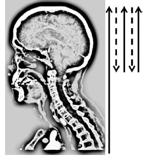
Analisi delle immagini
"Brain Haemorrhage": mappa dello iodio
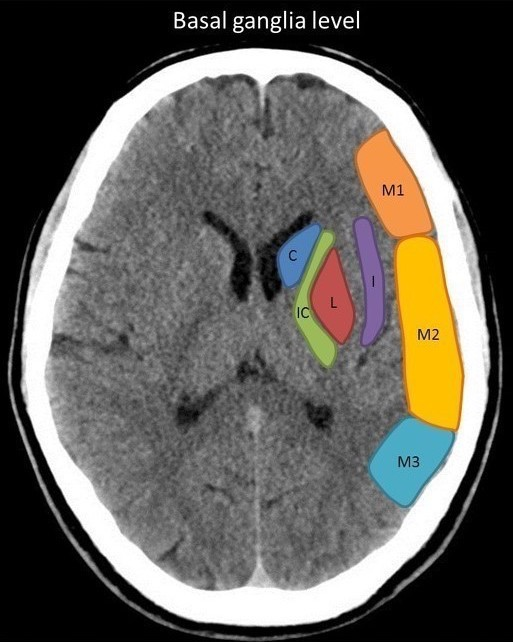
Zona A: M1, M2, M3
Zona C: I, C, L, IC
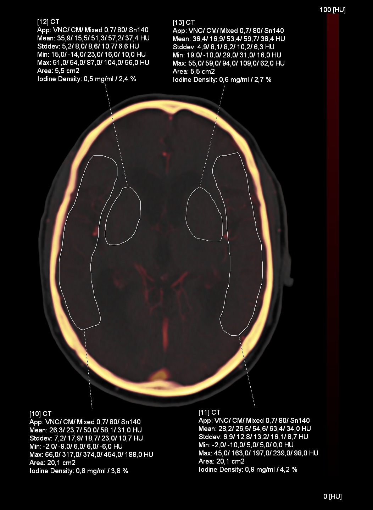
Syngo.via VB30, SIEMENS
Analisi delle immagini
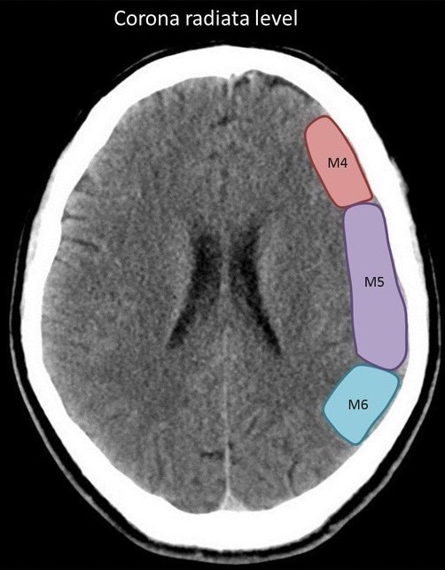
Zona B: M4, M5, M6
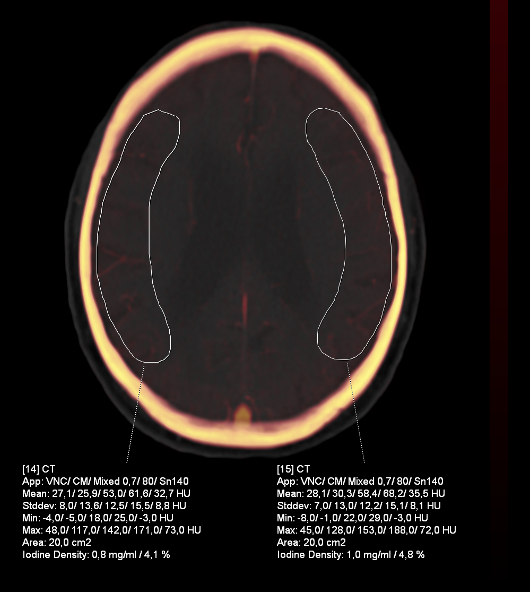
Syngo.via VB30, SIEMENS
Risultati
Iodine Density
Valori di Iodine Density relativi alle diverse zone di interesse, ottenuti per ciascuna fase contrastografica, nei due gruppi di pazienti
Gruppo 1
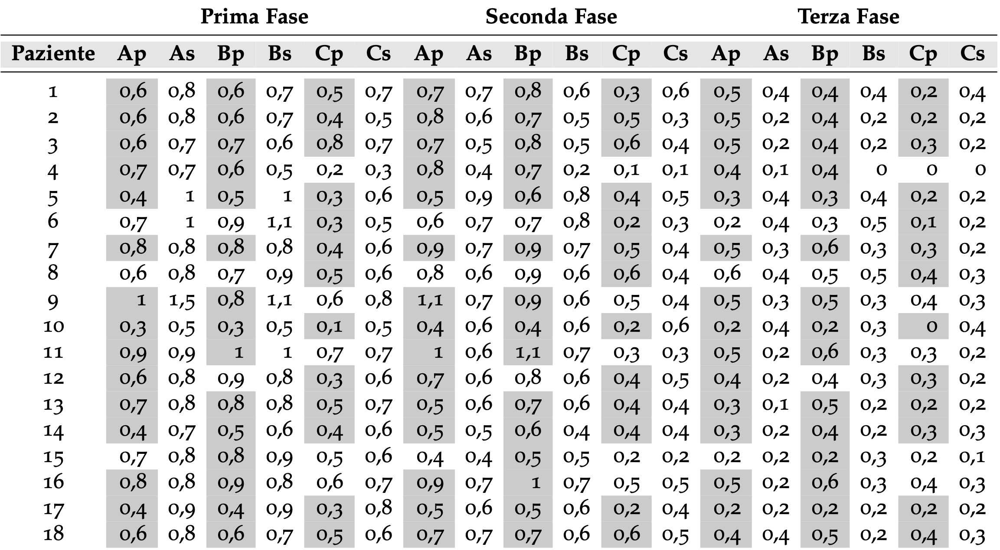
Gruppo 2
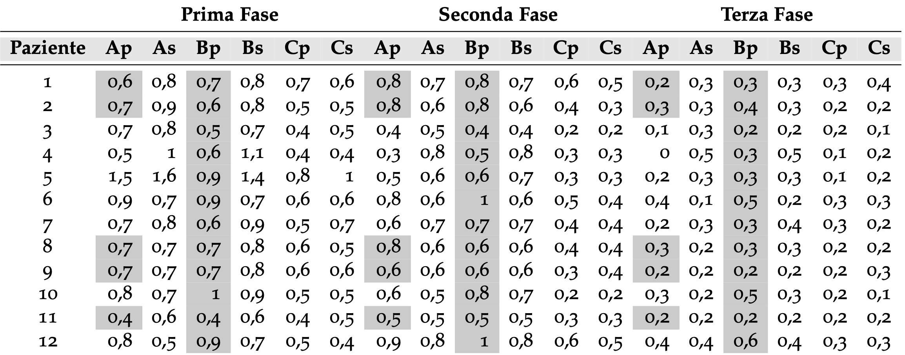
Iodine Density
Calcolo dei valori medi per gruppo
Gruppo 1
Fase 1
Fase 2
Fase 3
Sano
0.73
0.53
0.27
Patologico
0.64
0.73
0.41
Gruppo 2
Fase 1
Fase 2
Fase 3
Sano
0.71
0.51
0.25
Patologico
0.68
0.69
0.31
Negativi
Fase 1
Fase 2
Fase 3
Emisfero Dx
0.80
0.58
0.31
Emisfero Sn
0.75
0.55
0.29
Non ci sono differenze sostanziali tra i valori assoluti di I.D.
Non è possibile stabilire un cut-off assoluto
Nella aree ischemiche il valore di I.D. è maggiore nella seconda fase contrastografica
Nelle aree sane la I.D. è maggiore nella prima fase
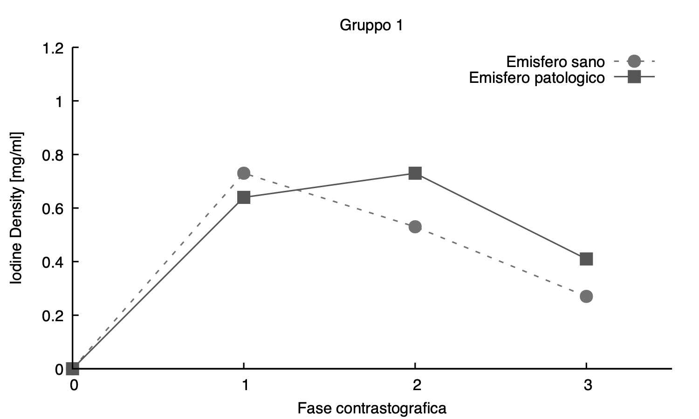
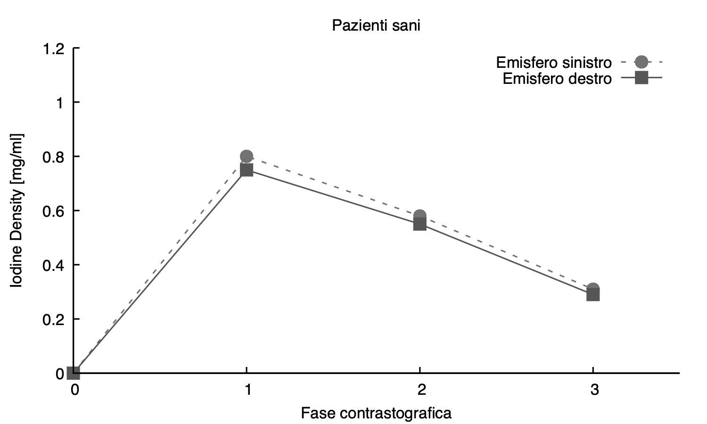
Iodine Density
Pattern sano: picco di Iodine Density nella prima fase
Pattern patologico: picco di Iodine Density nella seconda fase
Gruppo 1
Gruppo 2
Totale
Sensibilità
79%
59%
73%
Specificità
92%
91%
92%
Valore predittivo positivo
87%
66%
81%
Valore predittivo negativo
87%
87%
87%
Validità del test
87%
83%
86%
Conclusioni
Specificità e sensibilità
Elevata specificità nei due gruppi: 92%
Sensibilità maggiore nel Gruppo 1 rispetto al Gruppo 2: 73% vs 59%
Ridotte dimensioni dell'area ischemica
Competenza dei circoli collaterali
Intervallo di tempo tra l'esordio dei sintomi e l'angio-TC
Eventuali stenosi a monte
Limiti e sviluppi
Scarsa risoluzione delle misurazioni del software
Scarsa praticità in regime di urgenza
->
->
Software più risoluti, quindi misurazioni più precise
Mappe colore con visualizzazione diretta del contenuto di iodio
Conclusioni
L'introduzione della DECT nel protocollo stroke permette il riconoscimento precoce delle aree ischemiche con una sensibilità del 73% ed una specificità del 92%.
In futuro la DECT potrebbe essere un valido strumento per la diagnosi di stroke